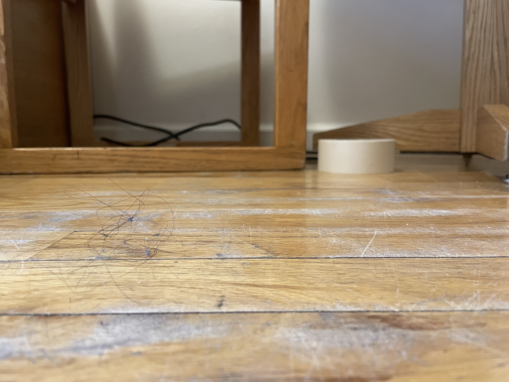

last experienced: 02.18.2021
In the morning I try to meditate. I sit on the floor next to the dining table in our very very tiny living room. When I lie down and try to take in my surroundings, I like to look at the floor and see all the dirt I’ve missed from the day before or the food droppings we’ve left behind after meals. When I’m lying on the ground my perspective is entirely different and I always feel so dirty in our space.